PID & Auto-Tuning อุณหภูมิ
จะคุมอุณหภูมิให้ "นิ่ง" ตามที่ตั้งไว้ไม่ใช่แค่เปิด-ปิดฮีตเตอร์ — ต้องใช้ PID บทนี้พาเข้าใจหลักการ PID, การจูนด้วย Ziegler–Nichols, และวิธี Auto-Tune ของ ตัวควบคุม Delta DTK4848 ผ่าน FX5U
ทำไมเปิด-ปิด (On/Off) ไม่พอ?
ลองคิดดู: ถ้าเราเปิดฮีตเตอร์เมื่ออุณหภูมิ < 60 °C และปิดเมื่อ > 60 °C — อุณหภูมิจะ แกว่ง รอบจุด setpoint ตลอด เพราะมีความล่าช้าของระบบ (Thermal lag)
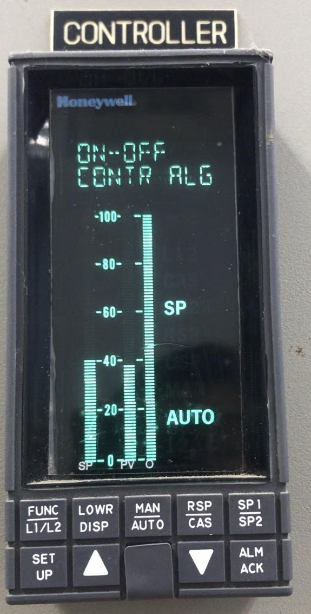
PID คืออะไร — แบบไม่ต้องคำนวณ
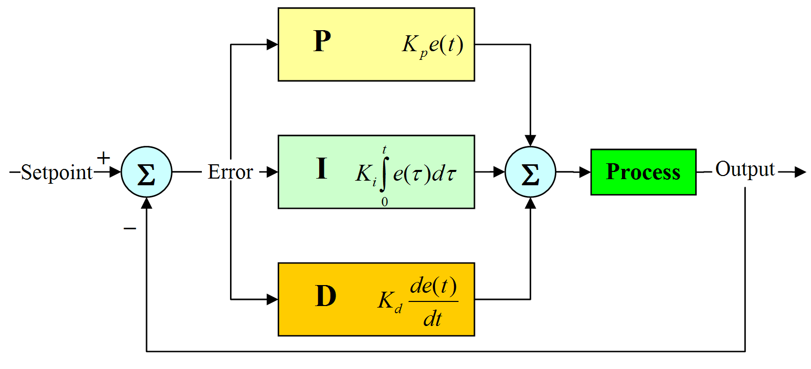
PID คือสูตร 3 ส่วน ที่รวมกันเพื่อตัดสินใจว่า "ตอนนี้ควรเปิดฮีตเตอร์กี่ %":
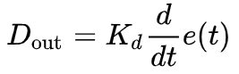
D_out = K_d · de(t)/dt — K_d คูณกับอัตราการเปลี่ยนแปลงของ errorผลของพารามิเตอร์แต่ละตัว
| เพิ่มพารามิเตอร์ | Rise Time | Overshoot | Settling Time | SS Error |
|---|---|---|---|---|
| Kp ↑ | ↓ เร็วขึ้น | ↑ แย่ลง | เปลี่ยนแปลงน้อย | ↓ ดีขึ้น |
| Ti ↓ (เพิ่ม I) | ↓ เร็วขึ้น | ↑ แย่ลง | ↑ แย่ลง | = 0 |
| Td ↑ | เปลี่ยนแปลงน้อย | ↓ ดีขึ้น | ↓ ดีขึ้น | เปลี่ยนแปลงน้อย |
วิธี Ziegler–Nichols (Closed-loop)
วิธีคลาสสิกที่ใช้ได้กับระบบจริงโดยไม่ต้องสร้างโมเดลคณิตศาสตร์ — เพียงทดลองหา 2 ค่า:
-
ตั้งค่าเริ่ม
Ti = ∞(ปิด I)Td = 0(ปิด D)Kp =เริ่มจากค่าน้อย ๆ เช่น 0.5
- ค่อย ๆ เพิ่ม Kp ทีละนิด ทุกครั้งที่เพิ่ม → สังเกตการตอบสนอง — ใน Trend graph อุณหภูมิเริ่มจะ แกว่ง รอบ setpoint
- หา Ku (Ultimate Gain) ค่า Kp ที่ทำให้ระบบแกว่งแบบ คงที่ (sinusoidal sustained oscillation) — ไม่บานออก ไม่จางหาย
- วัด Pu (Ultimate Period) ระยะเวลาของ 1 รอบการแกว่ง (peak ถึง peak) — ใช้นาฬิกาจับ หรืออ่านจาก Trend graph
- คำนวณ Kp, Ti, Td จากตาราง ใช้ตารางมาตรฐาน Ziegler-Nichols ด้านล่าง
ตาราง Ziegler–Nichols Classic
| Controller | Kp | Ti | Td |
|---|---|---|---|
| P | 0.50 × Ku | — | — |
| PI | 0.45 × Ku | Pu / 1.2 | — |
| PID (recommended) | 0.60 × Ku | Pu / 2 | Pu / 8 |
| PID (Pessen Integral) | 0.70 × Ku | Pu / 2.5 | 3·Pu / 20 |
| PID (Some Overshoot) | 0.33 × Ku | Pu / 2 | Pu / 3 |
Kp = 0.60 × 4.0 = 2.4 · Ti = 30 / 2 = 15 s · Td = 30 / 8 = 3.75 s
เครื่องคำนวณ Ziegler-Nichols
กรอก Ku และ Pu ที่หาได้จากการทดลอง → ระบบคำนวณ Kp/Ti/Td สำหรับ Controller 5 รูปแบบให้ทันที · กดปุ่ม "ลองค่านี้ →" เพื่อโยนค่าลง Playground ด้านล่างและดูผล
🧪 ลองจูน PID เอง — Live Simulator
เลื่อน Kp / Ti / Td แล้วดูกราฟ Response ตอบสนองทันที — Plant model เป็น First-Order Heater (K=1, τ=25s, dead-time θ=5s) คล้ายเตาฮีตเตอร์จริง · Setpoint = 60°C, เริ่มจาก Ambient 25°C · กดปุ่ม Preset เพื่อเปรียบเทียบ (Kp ต่ำ-สูง, P only, PI, PID Ziegler-Nichols)
การใช้ Auto-Tune ที่ตัว Delta DTK4848
โชคดี — Delta DTK4848 มี Auto-Tune ในตัว ไม่ต้องไปนั่งเพิ่ม Kp ด้วยมือ มันจะทำขั้นตอน Relay Feedback Method (คล้าย ZN) ให้อัตโนมัติ
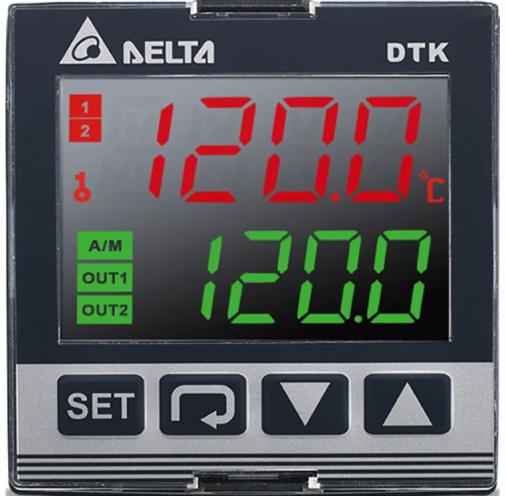
- เตรียมระบบจริง ต่อ Thermocouple Type-K เข้า DTK4848 → ฮีตเตอร์ + SSR (Solid State Relay) ออก Output 1 — ตรวจสายให้แน่นและขั้วบวก-ลบของ Thermocouple ถูก
- ตั้ง Set Point ที่ DTK กดปุ่ม Set → ตั้งอุณหภูมิเป้าหมาย เช่น 60 °C
-
เปิด Auto-Tune Mode
เข้า Parameter Menu → หา
AT(Auto-Tune) → เปลี่ยนค่าเป็น ON — หน้าจอจะเริ่มกระพริบ "AT" - รอ ~5–15 นาที ระบบจะ ตั้งใจให้ฮีตเตอร์ on/off ค้าง เพื่อวัด Ku และ Pu → เสร็จแล้ว DTK จะ เซฟค่า Kp/Ti/Td อัตโนมัติ และดับสัญลักษณ์ AT
- ทดสอบผล เปลี่ยน Set Point เป็นค่าอื่น (เช่น 70 °C) — ดู Trend Graph ที่ HMI ว่ามาถึงค่าเร็วและนิ่ง
การควบคุมผ่าน FX5U — โดยไม่ใช้ AT ของ DTK
ถ้าเราอยาก เขียน PID เอง ใน FX5U (เช่น เพื่อใส่ใน HMI หรือควบคุม fan ร่วม) ใช้คำสั่งในตัว:
; FX5U มี Instruction PIDRUN — ตัวอย่าง:
;
; PIDRUN s1 s2 s3 d
; s1 = Set Point Register (D100)
; s2 = Process Value Register (D102) — ค่าวัดจริง
; s3 = Parameter Table Start (D200..D224 — 25 word)
; d = Output Register (D104) — ส่งไป SSR / Analog Out
LD M0 ; Enable PID
PIDRUN D100 D102 D200 D104
; เซฟค่า PID parameter ลงตาราง D200..D224 ตอน Init
LD M8002 ; Initial Pulse
MOV K2400 D200 ; Kp = 2400 (ตัวคูณ 1000)
MOV K15 D204 ; Ti = 15 s
MOV K375 D208 ; Td × 100 = 3.75 s × 100
MOV K1000 D210 ; Sampling time = 1000 ms
MOV K0 D224 ; Output limit min
MOV K10000 D226 ; Output limit max (= 100.00%)เอกสารและวิดีโอ
- การจูน PID ด้วย Ziegler-Nichols (ภาษาไทย)
- Delta DT Series Manual
- Temperature + Power Meter Reference
ห้อง Lab Process Control จริง
ห้อง Lab Process Control ของภาควิชา EE ที่ใช้ทำการทดลอง — มีสถานีหลายตัวสำหรับการทดลอง Temperature, Flow, Level, Pressure
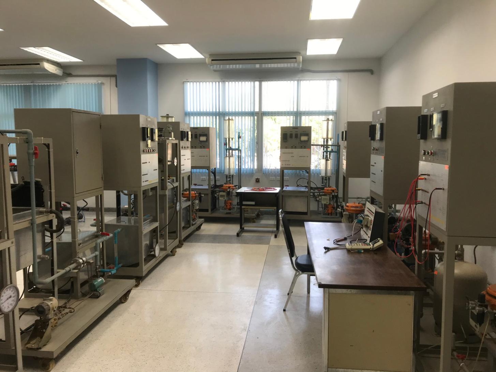
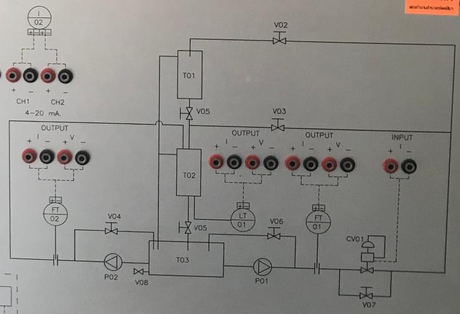
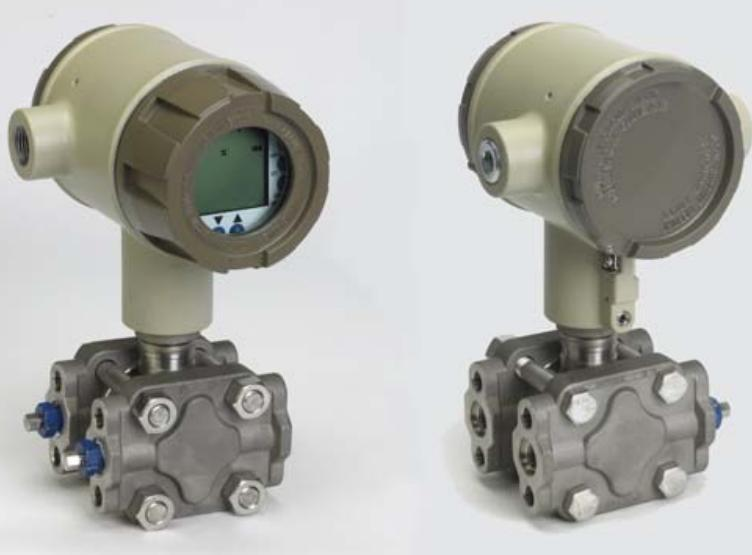
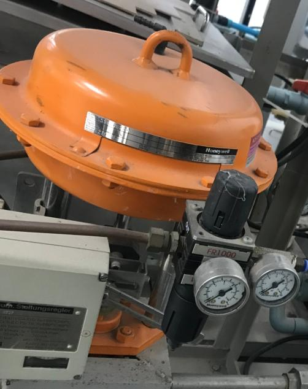
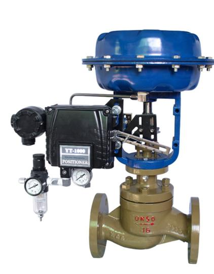
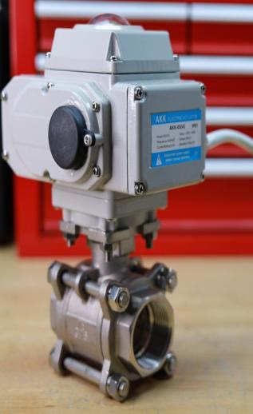
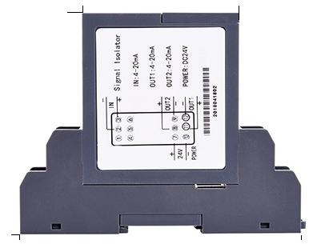